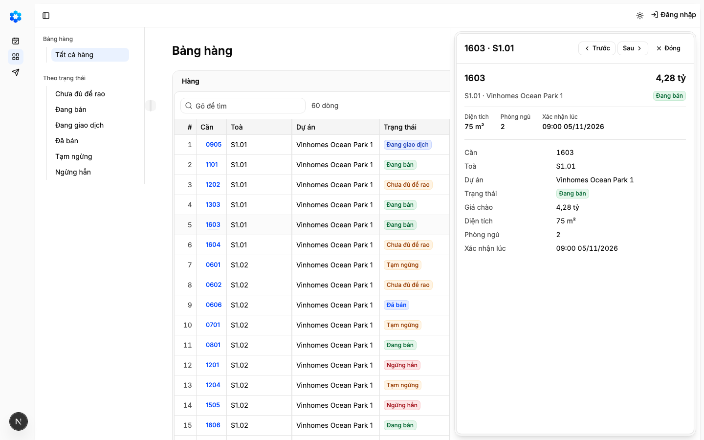
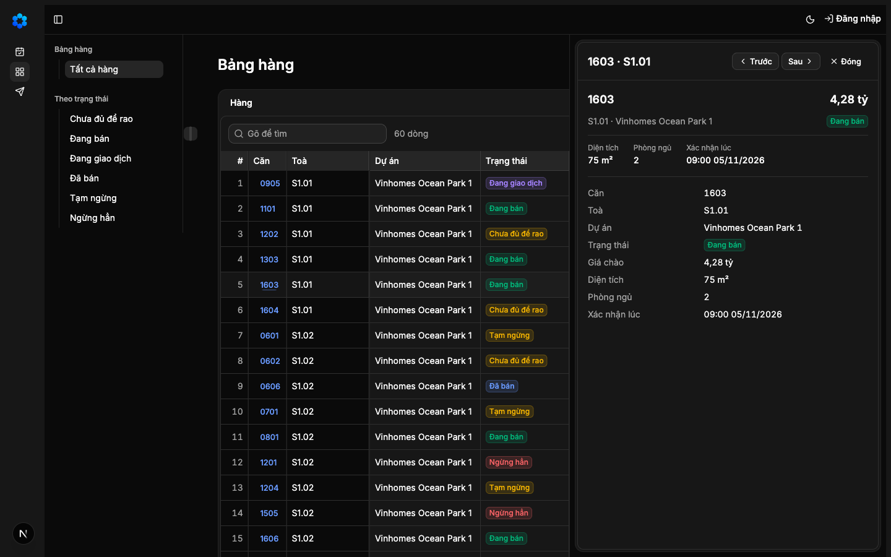
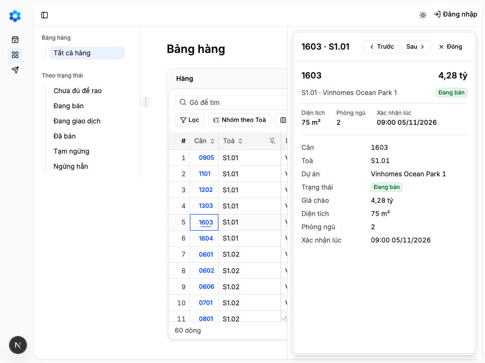
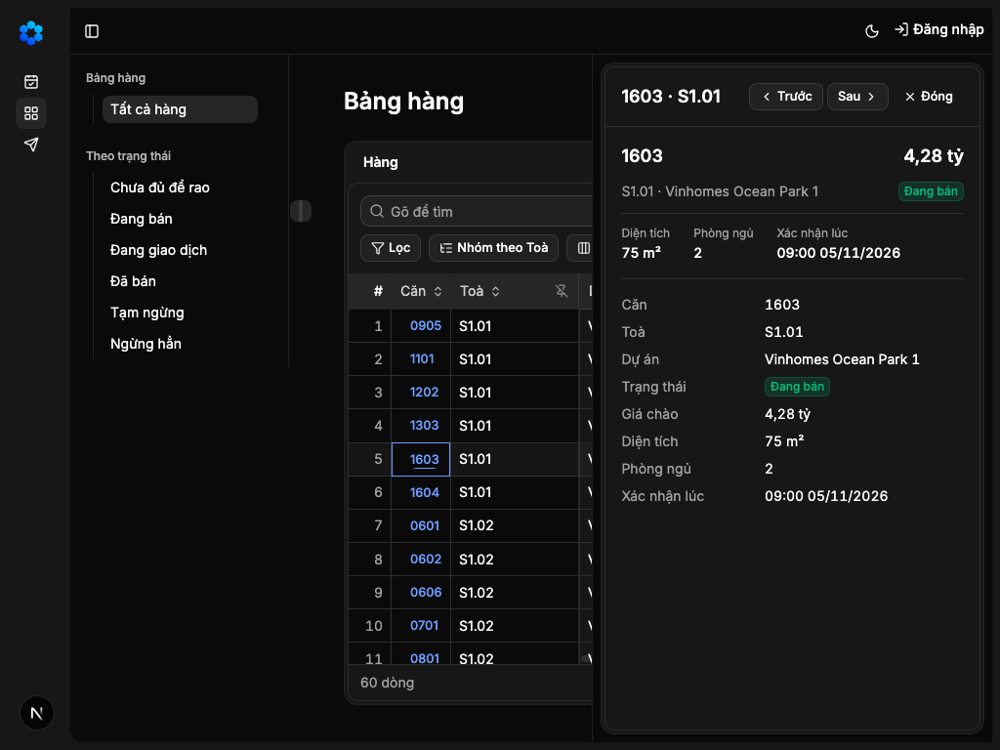
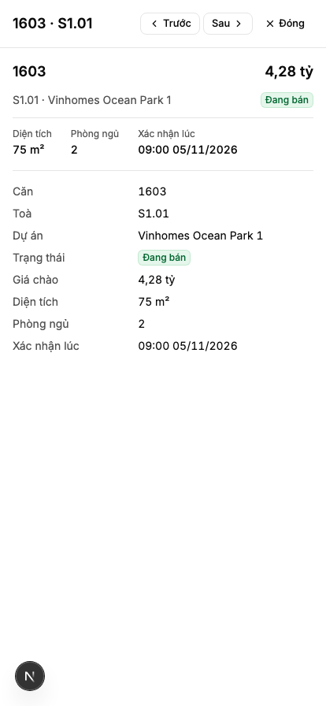
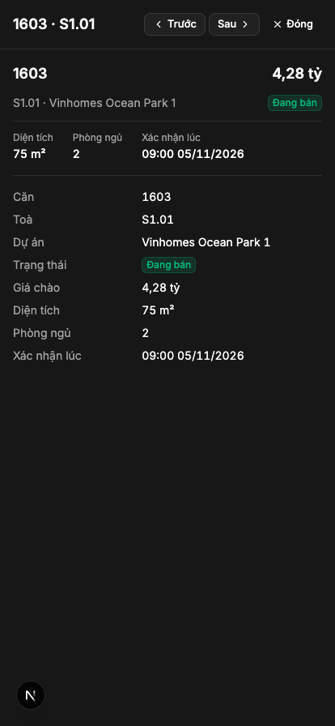
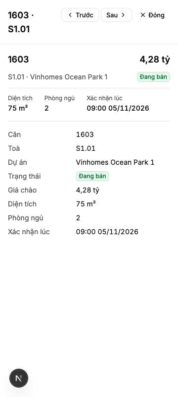
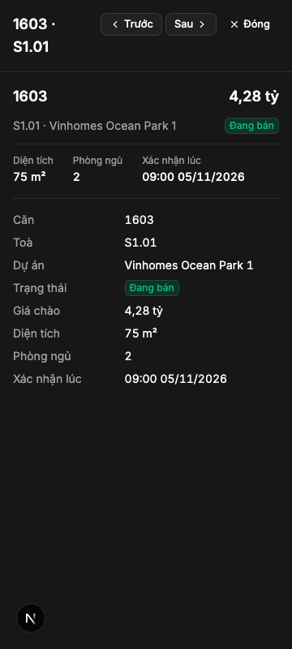

"Đầu chủ bấm một căn và thấy hồ sơ căn cạnh bảng, trên điện thoại thấy thẻ căn"
Vì sao làm
Hồ sơ và thẻ là hai dạng xem của cùng một căn
Đã hứa
- AC-1 — Given một dòng Bảng hàng của căn mẫu, When dựng mô hình xem của căn, Then thẻ căn và hồ sơ cùng đọc mô hình ấy: mã
- AC-2 — Given Bảng hàng ở 1440 và 1024, When bấm mã một căn, Then hồ sơ căn ấy nổi bên phải vùng làm việc, mép trên sát mép
- AC-3 — Given hồ sơ đang mở ở 1440 và 1024, When nhìn phần bảng bên trái ngăn, Then cột số dòng, Căn, Toà vẫn đứng yên và
- AC-4 — Given hồ sơ mở, When nhìn địa chỉ trang, Then địa chỉ mang `ho-so=<id lần chào>`; mở thẳng địa chỉ ấy thì hồ sơ căn
- AC-5 — Given hồ sơ mở, When bấm «Sau» và «Trước», Then đi theo đúng thứ tự dòng bảng đang hiện (cả sau khi gõ tìm), «Trước»
- AC-6 — Given hồ sơ mở ở máy tính, When mở từ lúc đóng, Then tiêu điểm vào tên hồ sơ; When bấm Esc trong hồ sơ hoặc «Đóng»,
- AC-7 — Given Bảng hàng ở 414 và 360, When chạm mã một căn, Then hồ sơ mở toàn màn (phủ cả khung nhìn), đầu màn là thẻ căn
- AC-8 — Given khung hồ sơ và khung lưới là khuôn dùng chung, When chạy bộ kiểm hành vi, bộ kiểm lưới, rào «màn tự dựng lại
- AC-9 — Given hồ sơ đang mở ở 1440 và 360, When quét trợ năng ở sáng và tối, Then không lỗi mức nghiêm trọng hay nguy cấp.
- AC-10 — Given Bảng hàng đang chạy, When nhìn ở bốn khổ, sáng và tối, với hồ sơ một căn đang mở, Then thấy hồ sơ nổi bên phải, từ dưới
Thiết kế
_acceptance/ho-so-can/design.md
Quyết định
- 2026-11-12 · Máy · approach · S1 — Nạp 3 luật sản phẩm từ PRODUCT-INVARIANTS.mdKho đã khai tệp luật sản phẩm — bước thiết kế đọc nó trước khi chọn.
- 2026-11-12 · Máy · approach · S1 — Đã tra tri thức: Đầu chủ bấm một căn và thấy hồ sơ căn cạnh bảng, trên điện thoại thấy thẻ cănKho đã khai tri_thuc — bước thiết kế tra trang trước khi chọn.
- 2026-11-12 · Máy · approach · S1 — Hồ sơ căn mở qua khung hồ sơ dùng chung của Lưới (màn chỉ khai cách dựng nội dung một căn); đổi khung thì đổi ở mọi nơi dùng.Khung hồ sơ đã là một chỗ dựng duy nhất (hàng 1e) và quyết định 0023 điều 8 cấm tách nhánh cho một màn.
- 2026-11-12 · Máy · approach · S1 — Hỏi-1: Hồ sơ căn trên máy tính đứng thành cột bên phải bảng (theo app-shell-11, như Quỹ hàng chọn 05/11), không nổi đè lên bảng.Đầu chủ làm lâu trong hồ sơ; trên bản chạy, ngăn nổi ở 1024 che ô tìm, số dòng và nút ở thanh trên (evidence/ban-bam/loi-b-1024-sang.png).
- 2026-11-12 · Máy · descope · S1 — Hỏi-2: Cột hồ sơ rộng cố định hai phần năm, chưa kéo đổi rộng được.Kéo chia cần gói react-resizable-panels chưa có trong kho; thêm gói là đổi tệp khoá phụ thuộc, ngoài ranh giới của hàng.
- 2026-11-12 · Máy · descope · S1 — Hỏi-3: Thẻ căn hàng này không có ảnh bìa và hướng; xếp theo ô product-grid-4 với mã căn và giá một dòng, nơi và trạng thái, ba thông số Diện tích, Phòng ngủ, Xác nhận lúc.Ảnh của căn là mã G4 (hàng sau); bảng nhãn chưa có nhãn «Hướng» và hàng này không mở mô hình nghiệp vụ.
- 2026-11-12 · Máy · approach · S1 — Sống chung với hàng 2a: bấm ô chỉ chọn ô, mở hồ sơ bằng mã căn hoặc Enter qua lối «mở dòng» của Lưới; khi hồ sơ mở, cột số dòng, Căn, Toà đứng yên và không cột nào tự ẩn; Esc trong hồ sơ là của hồ sơ.Hai dãy thống nhất qua tin K-1211-9; tự ẩn cột phá thói quen «thấy hết» của Sheet và giành việc của nút Cột (2a).
- 2026-11-12 · Máy · approach · S1 — Chạy design-pass: dựng bản bấm được trên Bảng hàng thật, chụp bốn khổ sáng tối, hồ sơ đóng và mở, kèm ảnh lối B.Chủ kho không duyệt màn bằng chữ (phán quyết 2026-11-11 12:40Z).
- 2026-11-12 · Máy · descope · S1 — bỏ đường-đo — ô cơ hội chưa khai ngưỡng nghiệm thuopportunity.md để trống mục ngưỡng; chủ kho không UAT từng hàng.
- 2026-11-12 · Máy · descope · S1 — Hồ sơ hàng này không có số chủ nhà, ảnh, Sẵn sàng bán và giá kèm điều kiện phí — mỗi thứ là một mã riêng của bản phạm vi MVP.Bản phạm vi tách G1, G4, G5, C1 khỏi B2, B3; hàng 3 chỉ mang B2, B3.
- 2026-11-12 · Máy · descope · S1 — Bỏ các vùng bán hàng của solution-crm-4 (chọn giai đoạn, xác suất thắng, đội, việc kế, tài chính, nút Thắng Thua).Mô hình nghiệp vụ của căn không có giai đoạn, xác suất, đội hay khoản tài chính nào để đặt vào.
- 2026-11-12 · Máy · descope · S1 — Hỏi-4: Hồ sơ toàn màn trên điện thoại hàng này không có nút chính dính đáy («Hỏi đầu chủ» cho Đầu khách, «Ghi cuộc gọi» cho Đầu chủ) như thân product-detail-5 của Quỹ hàng.Hai nút ấy dẫn tới luồng Gửi (K1) và ghi cuộc gọi (G3) chưa có; nút không dẫn đi đâu là nút chết.
- 2026-11-12 · Máy · approach · S1 — Hỏi-5: Mở hồ sơ bằng bấm mã căn (và Enter khi hàng 2a gộp); bấm vào ô khác của dòng chỉ chọn ô như Sheet, không mở hồ sơ.Hàng 2a giữ chọn ô bằng chuột cho bôi vùng và chép như Sheet; hai dãy đã thống nhất (tin K-1211-9) nhưng đây là thói quen người dùng, chủ kho quyết.
- 2026-11-12 · Máy · approach · S1 — Khi hồ sơ mở, cột số dòng, Căn, Toà đứng yên và không cột nào tự ẩn; Esc trong hồ sơ là của hồ sơ, Esc trong lưới là của hàng 2a.Tách khỏi dòng gộp cũ theo phản biện: phần này có một lối sống, phần bấm ô thành Hỏi-5.
- 2026-11-12 · Người (Manh Phan) · approach · gate1 — Hồ sơ căn là ngăn nổi bên phải (lối B) làm UX chung cho mọi màn có «xem chi tiết một dòng» và cho lớp trò chuyện với AI sau này; ngăn không che thanh trên và thanh công cụ, không khoá bảng, và sẽ có nút ghim biến ngăn thành cột khi làm lâu.người chọn ở Cổng Phạm vi: Lấy B có ghim
- 2026-11-12 · Người (Manh Phan) · descope · gate1 — Nút ghim (ngăn thành cột, kéo đổi rộng) và lớp trò chuyện với AI làm ở hàng sau; hàng 3 dựng ngăn nổi chưa ghim được.người chọn ở Cổng Phạm vi: Lấy B có ghim (theo khuyến nghị: ghim và AI để hàng sau)
- 2026-11-12 · Người (Manh Phan) · approach · gate1 — Ngăn nổi cao từ ngay dưới thanh trên của App Shell tới đáy màn hình; thanh trên luôn thấy, ngăn che phần phải của tên màn và thanh công cụ; khi toàn màn (thanh trên ẩn) ngăn cao hết màn.người chọn ở Cổng Phạm vi: Trừ thanh trên
- 2026-11-12 · Người (Manh Phan) · approach · gate1 — Ba nút Trước, Sau, Đóng của ngăn luôn ở góc trên phải, cùng hàng với tên hồ sơ, ở mọi khổ; tên dài thì xuống dòng.người chọn ở Cổng Phạm vi: Tôi thấy cụm nút trước sau đóng của sheet detail của trắng và đen đang không nhất quán. Tôi nghĩ như trắng hợp lý đặt top right.
- 2026-11-12 · Người (Manh Phan) · seal · gate1 —
- 2026-11-12 · Máy · fix · S3 — Thêm vào E2 phép đo ngăn không cuộn ngang ở 1440 và 1024 kèm ca phá; đặt ngăn trước thân lưới trong thứ tự trang để Tab từ hồ sơ đi vào bảng; ẩn thanh trên thì ngăn chạy từ mép trên cửa sổ; mép dưới ngăn so với đáy vùng làm việc hay đáy màn hình, cái nào tới trước.Bàn giao nợ phép đo không tràn ngang (G-1211-27); bài E2 đo thật cho thấy Tab rời hẳn vùng dữ liệu và mép trên còn 8 px khi ẩn thanh trên; trang Bảng hàng cao hơn màn hình nên đáy vùng làm việc nằm dưới đáy màn hình mà AC-2 hứa «mép dưới sát đáy màn hình».
- 2026-11-12 · Máy · fix · S3 — Sửa sau Cổng Phạm vi: bốn tệp kiểm ngoài vùng — bản sao kho của bộ chứng minh màn mang thêm src/modules (proof-matrix-self, proof-gate, proof-gate-0023, kèm một bậc nới COPY_ROW3 ở khoá băm của bài đã ký hàng 1c, OLD_TESTS_BLOB không đổi) và bài kiểm Bảng hàng có giả lập matchMedia.Sổ khối có dòng thật trỏ vào src/modules/listings/ui/listing-record.tsx nên bản sao kho phải mang thư mục ấy; Bảng hàng nay mở hồ sơ nên lưới hỏi khổ màn hình. Giám sát duyệt D-4, D-5; 122 ca trước và sau.
- 2026-11-12 · Máy · revisit · S3 — Ngoài hợp đồng — đề xuất một hàng riêng: bài ghim băm của hàng 1c đọc danh sách chép kho thật theo luật (mọi thư mục mà sổ khối và trang bối cảnh trỏ tới) thay vì thêm từng bậc nới; không có bậc thứ tư.Giám sát dặn ở D-5 điều kiện 4: hàng 2 và hàng 3 đã mỗi hàng thêm một bậc COPY_ROW.
- 2026-11-12 · Máy · fix · S3 — Sửa sau Cổng Phạm vi: ngưỡng E3 hạ từ ít nhất 5 cột dữ liệu thấy trọn bên trái ngăn (1440) và 3 (1024) xuống 4 và 2; thêm phép đo Căn và Toà thấy trọn khi ngăn mở ở cả hai khổ, kèm ca phá. Lời AC-2 và AC-3 giữ nguyên.Giám sát phân xử D-1211-12 theo quyền chủ kho giao: ngưỡng 5/3 ghim ở phản biện S1 trước khi chủ kho chốt ngăn nổi rộng khoảng hai phần năm; số đo thật với ngăn mở là 4 cột ở 1440 (Căn, Toà, Dự án, Trạng thái) và 2 ở 1024 (Căn, Toà); giá luôn thấy ở đầu hồ sơ.
- 2026-11-12 · Máy · fix · S4-r1 — Đưa ngăn nổi ra ngoài khung của vùng dữ liệu, ngay trước vùng trong thứ tự trang (không dùng cổng portal ra cuối trang), để bộ quét trợ năng đọc được cả phần đầu hồ sơ và Tab từ hồ sơ vẫn đi vào ô tìm của vùng.Lượt 1: make e2e đỏ ở tests/e2e/behavior.spec.ts — axe không quét phần trên ngăn (tên, thẻ, ba trường đầu) vì khung vùng cắt tràn (overflow hidden) từ y=243 mà ngăn cố định từ y=56; đặt ngăn trong khung lại làm vùng có hai h2. Lỗi có từ lúc chuyển sang ngăn nổi (0ad8b56), đo lại trên cdbb1b6 cũng đỏ.
- 2026-11-12 · Máy · fix · S4-r1 — Sửa sau Cổng Phạm vi: bài «record panel opens beside the grid» của trang mẫu hành vi (tests/e2e/behavior.spec.ts, hàng 1e) ở khổ rộng nay đòi mép phải ngăn trùng mép phải vùng làm việc App Shell (lệch ≤1px) thay vì trùng mép cửa sổ; nhánh điện thoại giữ nguyên. Hai ca tương phản của cùng tệp là lỗi có sẵn từ commit ngăn nổi 0ad8b56: trước sửa axe chỉ quét 8 nút ở nửa dưới ngăn và không báo color-contrast; sau khi ngăn ra ngoài khung cắt tràn, cả hai ca xanh (52/52).Quyết định 0024 và hai lời chốt của chủ kho «Lấy B có ghim», «Trừ thanh trên»: ngăn nổi đứng trong vùng làm việc, mép phải lùi 16px so với cửa sổ (1424 ở 1440, 1008 ở 1024). Giám sát duyệt D-6.
- 2026-11-12 · Người (Manh Phan) · approach · S4-r1 — Chủ kho phê ngưỡng E3 mới: ít nhất 4 cột dữ liệu thấy trọn bên trái ngăn ở 1440 và 2 ở 1024 (thay 5 và 3).người gõ trong phiên dãy D: «Đồng ý 4 và 2» — trả lời câu D-1211-12, cùng hướng phân xử của giám sát.
- 2026-11-12 · Máy · fix · S4-r1 — Thêm .playwright-mcp/ vào cuối .gitignore và .prettierignore; lượt chấm trên 2042d69 đỏ vì hạ tầng, không tính vào số lượt của hàng 3.Lượt ấy mọi eval đạt (E11 hội đồng PASS) nhưng make check đỏ ở Prettier vì tác tử chụp ảnh E10 (Playwright MCP) ghi .playwright-mcp/ vào cây làm việc đúng lúc make check chạy song song. Lỗi hạ tầng chung; giám sát duyệt D-7 và báo dãy K, H.
- 2026-11-12 · Máy · fix · S4-r2 — Ngăn nổi đo lại vị trí khi trang cuộn (thêm trình nghe scroll), và E2 thêm phép đo cuộn trang 400 px rồi về 0 kèm ca phá; thiếu bản sửa thì bài đỏ «record top 56 not under the top bar 48».Vòng 2 PASS nhưng người soát xác nhận một lỗi trong hợp đồng (AC-2): ngăn chỉ đo lại khi đổi cỡ cửa sổ, cuộn trang thì che 8 px thanh trên hoặc để hở một dải bảng. Không trình một PASS còn lỗi đã biết.
- 2026-11-12 · Máy · revisit · gate2 — Ngoài-1: ghi Known limitsmáy tự định tuyến theo đề xuất S4 «known-limits» — kho bật feature_loop.ngoai_n_tu_dinh_tuyen
- 2026-11-12 · Máy · revisit · gate2 — Ngoài-2: chấp nhận, không sửamáy tự định tuyến theo đề xuất S4 «wont-fix» — kho bật feature_loop.ngoai_n_tu_dinh_tuyen
- 2026-11-12 · Máy · revisit · gate2 — Ngoài-3: chấp nhận, không sửamáy tự định tuyến theo đề xuất S4 «wont-fix» — kho bật feature_loop.ngoai_n_tu_dinh_tuyen
- 2026-11-12 · Máy · revisit · gate2 — Ngoài-4: ghi Known limitsmáy tự định tuyến theo đề xuất S4 «known-limits» — kho bật feature_loop.ngoai_n_tu_dinh_tuyen
- 2026-11-12 · Máy · revisit · gate2 — Ngoài-5: ghi Known limitsmáy tự định tuyến theo đề xuất S4 «known-limits» — kho bật feature_loop.ngoai_n_tu_dinh_tuyen
Bằng chứng
Các eval
| Eval | Tiêu chí | Loại | Verdict | run_id | verified_at |
|---|---|---|---|---|---|
| E1 | AC-1 | test | PASS | minted-ho-so-can-E1-r2 | 2026-11-12T10:20:40Z |
| E2 | AC-2 | script | PASS | minted-ho-so-can-E2-r3 | 2026-11-12T10:32:11Z |
| E3 | AC-3 | script | PASS | minted-ho-so-can-E3-r3 | 2026-11-12T10:32:11Z |
| E4 | AC-4 | script | PASS | minted-ho-so-can-E4-r3 | 2026-11-12T10:32:11Z |
| E5 | AC-5 | test | PASS | minted-ho-so-can-E5-r3 | 2026-11-12T10:32:11Z |
| E6 | AC-6 | test | PASS | minted-ho-so-can-E6-r3 | 2026-11-12T10:32:11Z |
| E7 | AC-7 | script | PASS | minted-ho-so-can-E7-r3 | 2026-11-12T10:32:11Z |
| E8 | AC-8 | test | PASS | minted-ho-so-can-E8-r3 | 2026-11-12T10:32:11Z |
| E9 | AC-9 | script | PASS | minted-ho-so-can-E9-r3 | 2026-11-12T10:32:11Z |
| E10 | AC-10 | ui-check | PASS | minted-ho-so-can-E10-r3 | 2026-11-12T10:32:11Z |
| E11 | AC-10 | judgment | PASS | — | — |
| E12 | AC-8 | script | PASS | minted-ho-so-can-E12-r3 | 2026-11-12T10:32:11Z |
Chi tiết từng eval
PASS E1 · test
AC-1: Given một dòng Bảng hàng của căn mẫu, When dựng mô hình xem của căn, Then thẻ căn và hồ sơ cùng đọc mô hình ấy: mã
carry-forward tu round 2 — delta khong cham paths cua eval
PASS E2 · script
AC-2: Given Bảng hàng ở 1440 và 1024, When bấm mã một căn, Then hồ sơ căn ấy nổi bên phải vùng làm việc, mép trên sát mép
make e2e: 683 passed (5.3m)
PASS E3 · script
AC-3: Given hồ sơ đang mở ở 1440 và 1024, When nhìn phần bảng bên trái ngăn, Then cột số dòng, Căn, Toà vẫn đứng yên và
make e2e: 683 passed (5.3m)
PASS E4 · script
AC-4: Given hồ sơ mở, When nhìn địa chỉ trang, Then địa chỉ mang `ho-so=<id lần chào>`; mở thẳng địa chỉ ấy thì hồ sơ căn
make e2e: 683 passed (5.3m)
PASS E5 · test
AC-5: Given hồ sơ mở, When bấm «Sau» và «Trước», Then đi theo đúng thứ tự dòng bảng đang hiện (cả sau khi gõ tìm), «Trước»
make test: finished green
PASS E6 · test
AC-6: Given hồ sơ mở ở máy tính, When mở từ lúc đóng, Then tiêu điểm vào tên hồ sơ; When bấm Esc trong hồ sơ hoặc «Đóng»,
make test: finished green
PASS E7 · script
AC-7: Given Bảng hàng ở 414 và 360, When chạm mã một căn, Then hồ sơ mở toàn màn (phủ cả khung nhìn), đầu màn là thẻ căn
make e2e: 683 passed (5.3m)
PASS E8 · test
AC-8: Given khung hồ sơ và khung lưới là khuôn dùng chung, When chạy bộ kiểm hành vi, bộ kiểm lưới, rào «màn tự dựng lại
make test: finished green
PASS E9 · script
AC-9: Given hồ sơ đang mở ở 1440 và 360, When quét trợ năng ở sáng và tối, Then không lỗi mức nghiêm trọng hay nguy cấp.
make e2e: 683 passed (5.3m)
PASS E10 · ui-check
AC-10: Given Bảng hàng đang chạy, When nhìn ở bốn khổ, sáng và tối, với hồ sơ một căn đang mở, Then thấy hồ sơ nổi bên phải, từ dưới









PASS E11 · judgment
AC-10: Given Bảng hàng đang chạy, When nhìn ở bốn khổ, sáng và tối, với hồ sơ một căn đang mở, Then thấy hồ sơ nổi bên phải, từ dưới
Phán đoán: Ba góc nhìn đều thấy hồ sơ nổi đúng vị trí ở 1440 và 1024, toàn màn ở 360, thẻ căn đủ nội dung, không chữ chồng chữ, ảnh tối đọc được.
PASS E12 · script
AC-8: Given khung hồ sơ và khung lưới là khuôn dùng chung, When chạy bộ kiểm hành vi, bộ kiểm lưới, rào «màn tự dựng lại
design-floor-s4: no raw colour codes in the files this round touched
Eval không phân biệt (Analyst)
Vòng verify
- Round 1: da qua cac vong truoc; lich su chi tiet nam trong run-log.jsonl.
- Round 2: PASS — mot phat hien trong hop dong: hồ sơ nổi không theo cuộn trang.
- Round 3: PASS — sửa hồ sơ nổi đo lại khi trang cuộn (commit 55db8b4); E1 mang tu round 2, cac eval con lai chay lai, baseline khong do duoc vi ha tang.
Tài nguyên
| Khối | Tác tử | Token đầu ra |
|---|---|---|
| S4 round 1 | 16 | 50.775 |
| S4 round 1 retry | 16 | 49.244 |
| S4 round 2 | 17 | 48.617 |
| S4 round 3 | 16 | 37.668 |
4 lượt chấm · tổng 186.304 token
Giới hạn và ngoài hợp đồng
- Không ảnh của căn (G4), không số chủ nhà (G1), không Sẵn sàng bán (G5), không chế độ cuộc gọi: hàng sau của lộ trình hoặc MVP chưa xác nhận.
- Không sửa trong hồ sơ (hàng 4, 5); hồ sơ chỉ đọc.
- Không bảng thẻ trên điện thoại (hàng 2b): hàng này dựng thẻ căn làm đầu hồ sơ; danh sách thẻ thay lưới là của 2b.
- Không phím mũi tên, chọn ô, bôi vùng, lọc từng cột, nhóm, ẩn hiện cột (hàng 2a); Enter mở dòng là lối 2a dựng, hồ sơ nối vào khi 2a gộp (hàng ký sau chấm lại phần bị đụng).
- Không nút ghim ngăn thành cột, không kéo đổi rộng, không lớp trò chuyện với AI (chủ kho chốt «B có ghim»: hàng sau); không trang toàn màn riêng cho một căn.
- Không nút chính dính đáy trên điện thoại («Hỏi đầu chủ», «Ghi cuộc gọi») (Hỏi-4): luồng Gửi (K1) và ghi cuộc gọi (G3) chưa có.
- Không hướng căn trên thẻ: bảng nhãn chưa có nhãn «Hướng», mô hình nghiệp vụ không mở ở hàng này.
Giao
chưa ghi quan sát production
Giá trị
- Câu hỏi phép đo trả lời: … — chưa đo
- Kết quả nào là SỐNG: … — chưa đo
- Kết quả nào là CHẾT: … — chưa đo
- Timebox: … — chưa đo